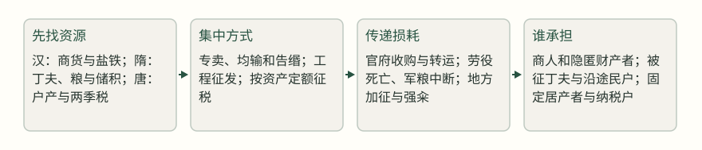
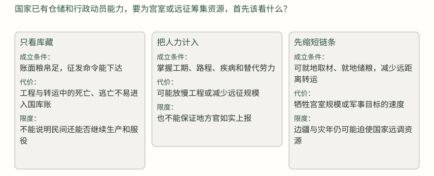
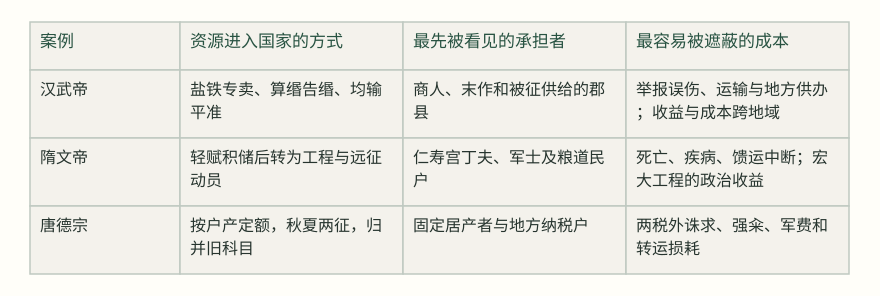

隋文帝修仁寿宫时，史书记下“役使严急”，丁夫疲顿、颠仆，死者“以万数”；几年后伐高丽，军队又因水潦、馈运不继而缺粮，水军遇风，最后记为死者十之八九。[1][2] 国家并非没有动员能力，问题在于库藏里的资源能否变成道路上按时抵达的粮食，工程和战争的成本又由谁承担。财政因此不是一张收入表，而是一条从征取、转运到使用的负担路径。本文再以汉武帝的财利政策和唐德宗两税法作比较，观察国家怎样获得资源，哪些成本会在账面之外重新出现。[3]
本篇只比较三个有明确转折的时段。汉武帝面对战争与边疆开拓，扩大国家直接经营和征取的范围；隋文帝的前期政策显示，节俭、轻赋可以形成储积，但仁寿宫和对高丽的行动暴露出人力与转运的极限；唐德宗时，杨炎用两税法重整旧制，随后陆贽、赵光奇等人的记载又说明，税法的名义边界并不能自动约束地方和军队。三案不是财政制度的通史，也不能据此给任何办法贴上永远有效或永远失败的标签。[4]
先把“收入”拆成三件事
读一项财政策略，可以先问三个问题。第一，国家要解决的是钱、粮、物资，还是可调动的人？第二，征取对象是否容易看见：登记在册的田产、流动的商货、远方的仓粮，还是临时征发的丁夫？第三，成本是否被写进账面：买粮的价格、运费、死亡与逃亡、地方加征，是否仍被称为“供给”而不再被看见？这三个问题会把“增加国用”从抽象口号还原成一条负担路径。下图用三案的结构表示这种路径；箭头表示资源的流向，不表示每一步都必然导致下一步。
资源进入国家系统的三条路径（分析示意）


汉武帝：把财富变成国家可调度的物资
汉武帝时，国家面对的不是一次普通的财政短缺。对匈奴的战争、对南越和西南夷的经营，都要求持续的粮秣、兵器和赏赐。元狩四年，朝廷先禁民私铸铁器、私煮盐，又规定商人和从事末作的人按缗钱申报，并把车船也列入算的范围；隐匿或申报不实，要戍边一年并没收财物，告发者可得其半。[9] 这套办法的逻辑很清楚：如果田租无法迅速覆盖军费，就从可见的商业财富和国家垄断资源下手。它也把“没有申报”从财产事实转成了可以处罚的行政事实。[10]
诏禁民敢私铸铁器、煮盐者釱左趾，没入其器物。公卿又请令诸贾人末作各以其物自占，率缗钱二千而一算；及民有轺车若船五丈以上者，皆有算。匿不自占，占不悉，戍边一岁，没入缗钱。有能告者，以其半畀之。
《资治通鉴》卷十九，元狩四年条 · [9]
“告缗”尤其能说明信息与负担的关系。朝廷给举报者分成，实际上把查财产的成本部分转给了私人；被发现者承担没收与戍边，地方官还要判断什么算隐匿。到元鼎六年，杨可推动告缗，义纵认为这是“乱民”，却因被天子视为阻挠国策而被弃市。[11] 这不等于所有被告发的人都没有隐匿，也不等于制度只靠诬告运转；史料没有给出被告缗者的总量、实际没收额和误报比例。能够确定的是：当财政办法奖励互相检举时，国家获得了更多关于财产的信息，同时也提高了社会内部互疑和行政误伤的可能。这个“可能”不能被写成已经证明的普遍结果。
第二层是直接经营。桑弘羊先“稍置均输，以通货物”，后来在元封元年条所载的平准办法中，远方把物资送来，京师的官署在价格高时卖、低时买，试图压住商人大贾的利润和物价波动。记载还说，山东漕粟每年增加六百万石，均输之物中有帛五百万匹，并称“民不益赋而天下用饶”。[5] 这些数字是《通鉴》记载的当时成效，不应被倒推为所有年份的稳定产量，也不能据此断言百姓毫无负担。因为均输不增加某一项明文赋税，不代表运输、地方供办和价格差额不存在；它只是把征取的一部分从钱粮税转成了物资和行政调度。[12]
南越、西南夷纳入汉的行政范围后，《通鉴》记载初郡暂不征赋税，但南阳、汉中以西各郡要供应吏卒、车马和衣被，地方还要承受汉军往来；大农靠均输与盐铁收入帮助供给。[13] 这里有一个容易被忽略的差别：被新纳入的地区短期免赋，不意味着整个帝国没有为它付费；成本可能先落在供应道路上的郡县和负责转输的民户身上。财政扩张的收益与负担，往往不在同一地点出现。
隋文帝：轻赋形成的储积，不能替代承受能力
隋文帝的经验提供了一个必要的反例。唐太宗后来回顾开皇十四年大旱，说隋文帝不许直接赈给，而让百姓就食山东；到末年，天下储积可以供五十年。[14] 这段话是唐太宗的追述与评价，不能当成隋代逐年仓储统计，但至少说明后人把“薄赋、积谷、留有余力”视为隋前期财政的重要特征。另一条记载则概括说，高祖轻徭薄赋、劝课农桑，仓库因此充盈，户口也从受禅初不足四百万增长到末年超过八百九十万。[15] 这些材料支持的是一种能力：国家少取一些，民间才有机会生产、储蓄和恢复。它不证明低税率本身能解决所有危机。
转折出现在仁寿宫。开皇十三年，杨素主持营宫，夷山填谷，役使严急，丁夫疲顿、颠仆，记载称“死者以万数”。[1] 两年后宫成，天热，役夫的尸体相继倒在道路上；杨素把尸体焚除。隋文帝见到宫殿壮丽，曾说杨素耗尽民力、替自己结怨天下，但第二天独孤皇后却称赞杨素尽孝，并赏钱百万、锦绢三千段。[16] 这两个动作同时存在：皇帝的责备说明工程代价已进入政治视野，皇后的奖赏又说明宏大工程可以被重新解释为孝道与功劳。史料没有告诉我们死者的准确数字，只能保留“死者以万数”这一原文范围；也不能把皇后的赏赐直接解释成她对死亡的态度。能确定的是，工程的受益者与付出者不在同一位置。
同一项国家工程，成本在哪个节点变得不可见？


对高丽的战争又显示转运不是附带问题。开皇十八年，隋出兵伐高丽，陆军因水潦、馈运不继而缺粮，又遇疾疫；水军从东莱渡海，遭风后船只多沉，最后记载称死者十之八九。[2] 这不是说所有死亡都由财政制度造成，天气、疾病、敌情都在其中；但它确实证明，动员人数与国家能否把粮食和船只按时送到，是两个不同的能力。下图把三案放在同一张表里，重点不是给国家“效率”评分，而是看资源约束在哪里转成了人的成本。
三案比较：收入手段不同，负担转移的位置也不同


唐德宗：改税法，不能自动改掉执行链
唐德宗建中元年，杨炎提出两税法。背景是租庸调的户籍基础已经破坏：富户可入官、入僧来逃避课役，贫户无法躲避，地方又不断增设名目，许多人逃亡，土著户只剩“百无四五”。[6] 新法按州县每年费用与上供之数定额，按现居户籍和贫富定差，行商在所在州县纳税，居民在夏秋两次征收；原有租、庸、调和杂徭归并于度支。[6] 对普通读者而言，它的核心不是一句“按资产征税”，而是把国家需要先算成一个额度，再把额度分摊到现存的人户与财产上。
命黜陟使与观察、刺史约百姓丁产，定等级，改作两税法。比来新旧征科色目，一切罢之；二税外辄率一钱者，以枉法论。
《资治通鉴》卷二百二十六，建中元年条 · [17]
从设计看，两税法试图修正按丁身征取的弊端，也试图让名目更少、征收时间更固定。但“按资产”并不等于资产容易估价。陆贽在贞元十年论两税之弊时指出，有的财物藏在箱囊，外人难见；有的粮食堆在场圃，价格低却会被视为富有；流通货物数量少但日有收益，房屋器用价值高却未必产生收入。他因此认为一概估价容易失平，可能使轻资、转徙者逃税，而守本业、置产业者反而受困。[7] 这是制度设计内部的难题：纳税能力不是财产标价的简单总和。[7]
更严重的是，法定边界与执行边界并不相同。贞元三年，赵光奇对德宗说，两税之外本应没有别的徭役，但实际诛求几乎超过税额；所谓和籴也变成强取，原说交在道旁，后来却要运到京西行营，动辄数百里，车坏马死，甚至破产。[8] 这段对话是皇帝亲自询问和一名民户的回答，能支持地方征求与运输的具体事实；它不能证明全国每地都一样，也不能把“百姓不乐”换算成全国负担比例。[8]
同一时期，元友直检核税外物，结果一年输到户部的有百余万缗、斛，民众“不堪其命”；德宗醒悟后，未入者归民，次年以后免除，东南百姓才恢复生产。[18] 这个转折很有价值，因为它把“税外征取”从抽象批评变成可观察的制度反馈：额外收入虽然进入了中央账面，却可能损害下一季、下一年的生产基础。后来李泌劝德宗赦免藩镇、州县过去的违法聚敛，主张宽待以换取主动输纳；他说得很直白，逼得太急会让人隐匿，财物反而落入奸吏之手。[19] 这不是宽大必然更有效的证明，而是一个执行条件：在信息不完整、地方有藏匿能力时，强制力度增加未必等于净收入增加。
陆贽还记录了和籴与边储的另一层损耗：有司不按丰歉及时收粮，豪家和贪吏趁机低价收取，军城与京邑之间又有价格和物资质量差，账簿甚至出现“空申簿帐、伪指囷仓”的现象。[20] 这些材料不能被概括成“两税法一开始就错了”。它们更准确地说明：当税额、军粮、转运和地方中介叠加时，制度原本的边界会被一层层重新解释。唐德宗的办法改了“怎么定税”，却没有同时解决“谁掌握现场信息、谁承担运费、谁能拒绝额外征取”。
三案放在一起，国家真正购买的是什么
汉武帝的办法购买的是可调度性：盐铁、商货和远方物资进入中央体系，国家能把资源用于战争与边疆，但也要承受识别财产、监督官吏和转输的成本。隋文帝前期积储购买的是缓冲时间：储粮使国家在灾年和军务前有余地，但宏大工程和远征一旦超过道路、人力和补给能力，仓库里的富足不能替人搬运，也不能阻止疾病和死亡。唐德宗的两税法购买的是可预期性：它试图取消旧名目、固定征收时点和分配标准，但地方加征与军需转运说明，法条没有覆盖的部分仍会回来。前述比较表把三种负担路径并列展示。
因此，判断“国家有钱”至少要分成三个层次。第一是账面收入：国库、仓库和中央度支收到什么。第二是可用收入：粮食是否在需要的地点，布帛能否交换成军需，运输后还剩多少。第三是可持续收入：纳税户下一年还能不能生产，服役者是否逃亡，地方是否还愿意如实登记。汉武帝记载中的“民不益赋而天下用饶”主要是对第一、第二层的肯定；仁寿宫和高丽之役把第二、第三层的极限暴露出来；两税后的诛求则说明，第三层会反过来约束第一层。[5][1][2][8]
读财政史时，怎样找到真正的代价
读者下次遇到“富国”“足用”“轻赋”这样的判断，可以沿着一条具体路径核查：先找资源来自哪类人和哪类物；再问征取是一次性的，还是会变成固定额度；然后把钱粮送到使用地点所需的路程、劳力和时间补回来；最后看史书是否记下逃亡、死亡、破产、转徙、复业或恢复生产。没有这些环节，单说收入增加，很容易把国家的收益误当成社会的收益。[9][5][6][7]
还要保留一条边界：古代财政是君主、官府、军队与编户之间的强制关系，不能直接变成现代生活中的理财或管理处方。可以迁移的是观察动作，而不是古代办法本身。面对任何制度，都要把“谁能被看见”“谁能申诉”“谁承担转运和等待”“临时要求何时会变成常例”分别问清。核查也有成本，等待可能错过资源，过度追问又可能让交易停滞；但如果连成本落在哪里都没有看见，就无法判断一项办法究竟解决了什么问题。
三案最后给出的不是一个统一答案，而是一条有条件的结论：国家取得资源的方式越直接，越需要可靠的信息和对执行链的约束；国家越依赖远程转运，越需要把损耗与承受能力纳入账面；税法越想固定边界，越要检查地方是否仍有把临时需要转成额外征求的空间。财政真正的力量，不只在于能取多少，也在于取完之后，生产者、运输者和纳税户是否还能继续支撑下一轮国家需要。
来源与证据范围
- 卷178 · 公元593年条 · 本年段落3（正文 · 阅读原文）
役使严急，丁夫多死，疲顿颠仆，推填坑坎，覆以土石，因而筑为平地。死者以万数。
支持：仁寿宫工程的征役强度与死亡记载。
限制：“以万数”为原文范围，未给精确数字；不能排除工程外其他因素。 - 卷178 · 公元598年条 · 本年段落4（正文 · 阅读原文）
值水潦，馈运不继，军中乏食，复遇疾疫。周罗黄自东莱泛海趣平壤城，亦遭风，船多飘没。秋，九月，己丑，师还，死者什八九。
支持：隋伐高丽的馈运、疾病、海运与伤亡压力。
限制：“死者什八九”是该次出师记载，不能外推为隋军所有远征比例。 - 卷19 · 公元前119年条 · 本年段落2（正文 · 阅读原文）
于是以东郭咸阳、孔仅为大农丞，领盐铁事；桑弘羊以计算用事。
支持：汉武帝财政机构吸纳盐铁经营与计算人才的背景。
限制：只支持任用与制度背景，不单独证明后续政策效果。 - 卷20 · 公元前110年条 · 本年段落8（正文 · 阅读原文）
弘羊作平准之法，令远方各以其物如异时商贾所转贩者为赋而相灌输。
支持：平准、均输把远方物资纳入官府调度。
限制：完整成效叙述见同段；记载为史书叙述，不等于全年普遍统计。 - 卷20 · 公元前110年条 · 本年段落8（正文 · 阅读原文）
山东漕粟益岁六百万石，一岁之中，太仓、甘泉仓满，边余谷，诸物均输，帛五百万匹，民不益赋而天下用饶。
支持：《通鉴》记载平准均输的物资数量与成效表述。
限制：数字与评价属于该段记载，不能外推为长期平均或无成本。 - 卷226 · 公元780年条 · 本年段落2（正文 · 阅读原文）
至是，炎建议作两税法：先计州县每岁所应费用及上供之数而赋于人，量出以制入。
支持：两税法的背景、按资产与现居户籍征收、秋夏两征及归并旧科。
限制：同年相邻段落记载制度设计；不等于实际执行完全按设计。 - 卷234 · 公元794年条 · 本年段落12（正文 · 阅读原文）
两税之立，惟以资产为宗，不以丁身为本；曾不寤资产之中，有藏于襟怀囊箧，物虽贵而人莫能窥；
支持：陆贽对两税按资产估价、藏财与负担失平的批评。
限制：这是陆贽论两税之弊的奏议，支持其论证与所见问题，不等于逐项全国统计。 - 卷233 · 公元787年条 · 本年段落19（正文 · 阅读原文）
前云两税之外悉无他傜，今非税而诛求者殆过于税。
支持：赵光奇向德宗陈述税外诛求、强籴与远距离运输负担。
限制：是皇帝询问时一名民户的陈述，不能证明全国各地同样严重。 - 卷19 · 公元前119年条 · 本年段落3（正文 · 阅读原文）
公卿又请令诸贾人末作各以其物自占，率缗钱二千而一算；及民有轺车若船五丈以上者，皆有算。
支持：算缗及车船计征的具体规则与处罚机制。
限制：该段是元狩四年条，不能据此推知所有商人的实际申报与缴纳。 - 卷19 · 公元前119年条 · 本年段落3（正文 · 阅读原文）
匿不自占，占不悉，戍边一岁，没入缗钱。有能告者，以其半畀之。
支持：隐匿财产的处罚及告发分成，支持信息激励分析。
限制：史料未给误报率、告发数量和实际没收总额。 - 卷20 · 公元前117年条 · 本年段落2（正文 · 阅读原文）
于是杨可告缗钱纵矣。义纵以为此乱民，部吏捕其为可使者。
支持：告缗扩大及义纵反对、受罚的转折。
限制：不证明告缗普遍依靠诬告，也不呈现被告者总数。 - 卷20 · 公元前111年条 · 本年段落9（正文 · 阅读原文）
郡、国多不便县官作盐铁器，苦恶价贵，或强令民买之；而船有算，商者少，物贵。
支持：盐铁官营与船算引发的不便、强买和物价问题。
限制：这是卜式的奏言，首先证明其所陈，不自动证明各郡均如此。 - 卷21 · 公元前109年条 · 本年段落13（正文 · 阅读原文）
大农以均输、调盐铁助赋，故能赡之。
支持：新郡免赋背景下，沿途郡县供给与大农财政支持。
限制：段落概括的是汉灭两越、平西南夷后的供给，不能据此量化各地负担。 - 卷192 · 公元628年条 · 本年段落6（正文 · 阅读原文）
开皇十四年大旱，隋文帝不许赈给，而令百姓就食山东，比至末年，天下储积可供五十年。
支持：唐太宗对隋文帝储积政策的追述。
限制：属于后来的回顾与评价，不是隋代逐年仓储原始统计。 - 卷180 · 公元604年条 · 本年段落3（正文 · 阅读原文）
爱养百姓，劝课农桑，轻傜薄赋。其自奉养，务为俭素，乘舆御物，故弊者随宜补用；自非享宴，所食不过一肉
支持：《通鉴》对隋文帝轻赋与节俭政策的概括。
限制：含有史家叙述性评价，不能单独证明因果或各地实际一致。 - 卷178 · 公元595年条 · 本年段落4（正文 · 阅读原文）
仁寿宫成。丁亥，上幸仁寿宫。时，天暑，役夫死者相次于道，杨素悉焚除之
支持：仁寿宫落成时役夫死亡、尸体处理及政治反应。
限制：记载没有说明死亡总数与各原因；后续赏赐不能直接推出动机。 - 卷226 · 公元780年条 · 本年段落1（正文 · 阅读原文）
命黜陟使与观察、刺史约百姓丁产，定等级，改作两税法。比来新旧征科色目，一切罢之；二税外辄率一钱者，以枉法论。
支持：两税法诏令的定等级、罢旧科目与禁税外加征。
限制：支持诏令内容，不证明各地实际遵行。 - 卷233 · 公元788年条 · 本年段落20（正文 · 阅读原文）
岁于税外输百余万缗、斛，民不堪命。
支持：元友直句检税外物导致额外输纳，后诏免除。
限制：“百余万缗、斛”并列记载，不能合并理解为单一币值或全国全部财政收入。 - 卷232 · 公元787年条 · 本年段落46（正文 · 阅读原文）
宽则获多而速，急则获少而迟。
支持：李泌关于宽急取财与地方隐匿、执行成本的判断。
限制：是李泌向德宗提出的政策判断，不是已被实验验证的普遍规律。 - 卷234 · 公元792年条 · 本年段落19（正文 · 阅读原文）
贱取于人以俟公私之乏。
支持：陆贽所述和籴中豪家、贪吏利用收购时机牟利。
限制：属于陆贽奏言中的案例与批评，不能据此断定所有仓储账目均为虚报。